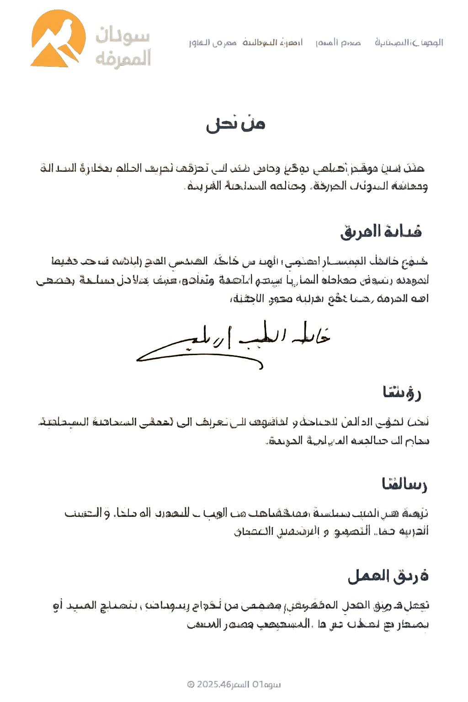

من نحن
سودان المعرفة هو موقع تعليمي وثقافي يهدف إلى تعريف العالم بحضارة السودان العريقة، ومعالمه السياحية الفريدة.
قيادة الفريق
يقود فريق "سودان المعرفة" المهندس خالد الطيب إبراهيم، وهو مهندس شغوف بالتقنية والتعليم، يتمتع برؤية واضحة لنقل حضارة السودان إلى العالم بأسلوب عصري ومبتكر. يؤمن بأن المعرفة هي جسر بين الماضي والمستقبل، ويعمل مع فريقه على بناء محتوى تعليمي وسياحي يعكس جمال السودان وتاريخه العريق.
رؤيتنا
نشر الوعي العالمي بتاريخ السودان وثقافته، وتعزيز السياحة الداخلية والخارجية من خلال محتوى تعليمي جذاب.
رسالتنا
تقديم معلومات دقيقة وموثوقة عن الوجهات السياحية والمواقع الأثرية، بأسلوب عصري يناسب جميع الأعمار.
فريق العمل
يتكوّن الفريق من مجموعة من الشباب السودانيين المتخصصين في تطوير الواجهات الأمامية، إدارة المحتوى، التصميم الجرافيكي، والبحث التاريخي. يعملون بروح جماعية على تطوير الموقع وتحديثه باستمرار ليكون مرجعًا موثوقًا ومصدر إلهام لكل من يهتم بالسودان.
مع خالص التحية،
المهندس خالط الطيب إبراهيم
قائد فريق سودان المعرفة
مع خالص التحية،
المهندس خالط الطيب إبراهيم
